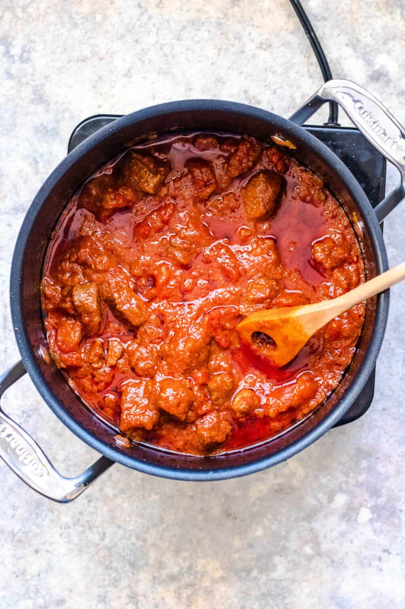

Zigni

Discription
A popular dish from my brillant good friends home country, Filmon Alem, it's a stew made from meat, tomatoes, red onions and Berbere spices. Often it can be made with different meats such as beef, lamb, goat, or chicken. Usually eaten with injera. The stew is eaten for lunch or dinner. It takes 5 to 6 hours to make. It has Italian and Middle Eastern influences.
Ingredients
- 3/4 cup vegetable oil
- 2 lb stew beef
- 1 1/2 tablespoon cumin
- 2 teaspoons turmeric
- 1 6 oz can tomato paste (about 1/2 cup)
- 1 small red onions, finely diced
- 14 oz can finely diced tomatoes, or 4 fresh tomatoes
- 2 tablespoons Berbere
- 1 tablespoon garlic
- 1/2 stick unsalted Butter
Steps
- Add vegetable oil to a pot and allow it to heat. Then, add the stew beef, cumin, turmeric, and 1/4 cup tomato paste.
- Add the finely diced onions and the 14 oz can of tomatoes. Stir. Cover and cook on medium heat for 2 hours.
- After 2 hours add berbere spice, garlic, and butter. Cover and cook for another 5 minutes.